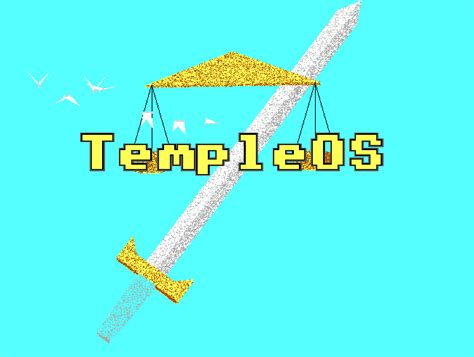
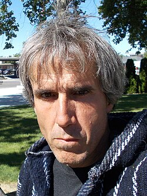
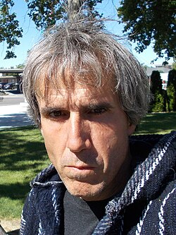

TempleOS:
Aviso: Este texto foi escrito em memória do programador Terry A. Davis!

O TempleOS é um sistema operacional independente, criado por Terry A. Davis e sim o sistema operacional inteiro
tem uma aparência um pouco... Religiosa por assim dizer, já que Terry tinha certos... Bem você vai ver na história.
O TempleOS surgiu em 2005, criado por Terry A. Daves que é um programador, que bem infelizmente ele sofria de esquizofrênia,
e ele dizia ouvir vozes que ele acreditava ser de Deus, que de acordou com ele "Deus mandou eu criar um sistema operacional" e assim foi
ele criou esse sistema operacional usando a linguagem HolyC que era um dialeto da linguagem C, e bem com a criação desse Sistema operacional
ele postava videos falando sobre o sistema operacional, mas de uma coisa que se sabe sobre esse sistema operacional é que não era possível
entrar na internet e acessar as coisas ou se quer tem um aplicativo de terceiros nesse sistema operacional, porque Terry via a internet como
uma ferramenta do anticristo, uma coisa interessante é que ele fez o sistema inteiro do zero, completamente sozinho, sem ninguém
e sim isso é muito admirador para alguns programadores, afinal... Criar um sistema operacional é completamente difícil ainda mais sozinho sem ajuda,
mas ai em 11/08/2018, aos 48 anos Terry foi atropelado por um trem em The Dalles, Oregon, EUA, que estava andando nos trilhos do trem em direção ao trem
que logo passou direto por cima de Terry A. Davis, e sim o TempleOS ficou mais como um museu de curiosidades mesmo, já que tinha muitos mistérios
por esse sistema operacional, e mesmo abandonado algumas pessoas visitam, apesar de quase ninguém conhecer a história de Terry A. Davis e esse projeto.
Pontos positivos e negativos do TempleOS:
Curiosidades sobre o TempleOS:
1) O TempleOS de acordo com Terry servia como um "Templo digital de Deus" o que de certa forma tem um tipo de inspiração religiosa.
2) Criado do zero (Principalmente a linguagem HolyC que tamém foi criada por Terry.)
3) O TempleOS tem uma resolução fixa de 640x480 com 16 cores, e o áudio é limitado a um controlador MDI de voz única de 8bits.
4) O TempleOS tinha um jogo que inclusive foi Terry que criou que se chamava "oráculo" que usava um gerador de números pseudoaleatórios
para selecionar um versóculo da bíblia.
5) O TempleOS tem como foco a simplicidade e velocidade.
Imagem da área de trabalho do TempleOS se caso tiver curiosidade:
 

Descanse em paz Terry A. Davis.